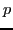
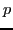

Recently the version of the finite element method has received
increasing attention. This is an adaptive finite element approach in
which adaptivity occurs in both the size,  , of the elements (spacial
or
, of the elements (spacial
or  adaptivity) and in the order, , of the approximating piecewise
polynomials (order or adaptivity). The objective is to determine a
distribution of
adaptivity) and in the order, , of the approximating piecewise
polynomials (order or adaptivity). The objective is to determine a
distribution of  and that minimizes the error using the least
amount of work in some measure. The main attraction of adaptivity is
that, in theory, the discretization error can decrease exponentially with
the number of degrees of freedom,
and that minimizes the error using the least
amount of work in some measure. The main attraction of adaptivity is
that, in theory, the discretization error can decrease exponentially with
the number of degrees of freedom,  , even in the presence of
singularities, and this rate of convergence has been observed in
practice.
, even in the presence of
singularities, and this rate of convergence has been observed in
practice.
It is desirable to combine this optimal order discretization method with an optimal order algebraic solution method, such as multigrid. Most published work in adaptive methods to date has focused on domain decomposition and preconditioned conjugate gradient type solvers or used direct solvers. In this presentation we present the -multigrid method for high order finite elements and -adaptive grids.
An intriguing notion is to use the values of as the levels of a multilevel method. This was first proposed in 1985 for the -version of the finite element method by Craig and Zienkiewicz [1]. Several other researchers developed multilevel methods based on in the later half of the 1980's, with Babuka et al. [2] coining the term multi- (as opposed to multigrid) method. Theoretical -independent (or nearly independent) convergence was established in the 1990's by Maday, Muñoz, Patera and Rønquist [3] and by Hu, Guo and Katz [4]. In the later 1990's and early 2000's the term -multigrid was adopted, and it was mostly used in conjunction with the discontinuous Galerkin method for hyperbolic conservation laws.
The basic idea of the -multigrid method is to use the -hierarchical
basis for the finite element space and perform a classic V-cycle in which
the level consists of all the bases up to degree  . The system
of equations on level 1, i.e. the linear basis functions, is solved with
a direct method. Nastase and Mavriplis [5] replaced the direct solver
with a classic
. The system
of equations on level 1, i.e. the linear basis functions, is solved with
a direct method. Nastase and Mavriplis [5] replaced the direct solver
with a classic  -multigrid method, and coined the term -multigrid
method.
-multigrid method, and coined the term -multigrid
method.
Most of the results presented with and -multigrid methods has
been with spectral element methods and discontinuous Galerkin methods.
Although some of the papers mention -adaptivity, to the author's
knowledge no papers have presented results using -adaptively refined
meshes. In this talk we define the -multigrid method in the context
of -adaptive finite elements for bisected triangular elements in 2D,
and present numerical convergence results using elliptic problems with
singular and nearly singular solutions. The results exhibit residual
contraction factors that are independent of both  and .
and .
References
[1] Craig, A.W. and Zienkiewicz, O.C., A multigrid algorithm using a hierarchical finite element basis, in Multigrid Methods for Integral and Differential Equations, D.J. Paddon and Holstein (eds.), Clarendon Press, Oxford, 1985, pp. 310-312.
[2] Babuska, I., Griebel, M. and Pitkaranta, J., The problem of selecting the shape functions for a p-type finite element, Internat. J. Numer. Methods Engng., 28, (1989), pp. 1891-1908.
[3] Maday, Y., Muñoz, R., Patera, A.T. and Rønquist, E.M., Spectral element multigrid methods, in Proc. of the IMACS Int. Symposium on Iterative Methods in Linear Algebra, P. de Groen and R. Beauwens (eds.), Elsevier, Amsterdam, 1992, pp. 191-201.
[4] Hu, N., Guo, X.-Z. and Katz, I., Multi- preconditioners, SIAM J. Sci. Comput., 18, (1997), pp. 1676-1697.
[5] Nastase, C.R. and Mavriplis, D.J., High-order discontinuous Galerkin methods using an -multigrid approach, J. Comput. Phys., 213, (2006), pp. 330-357.